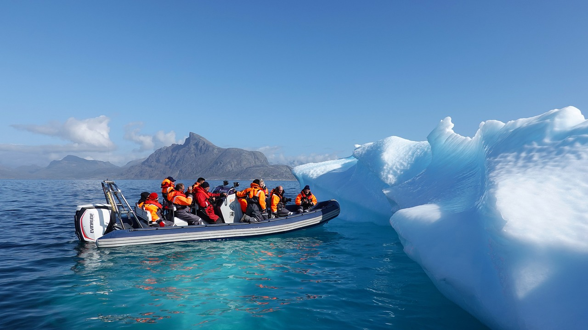
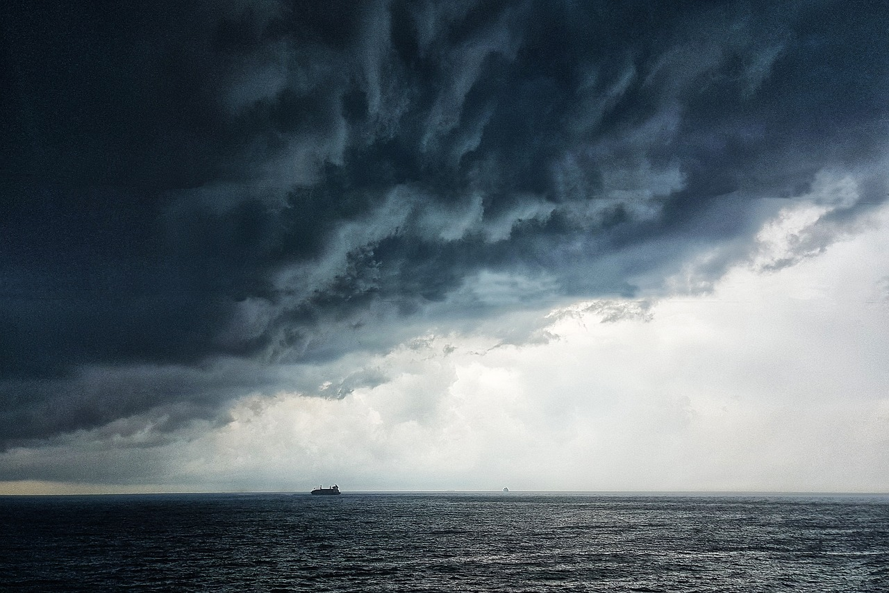
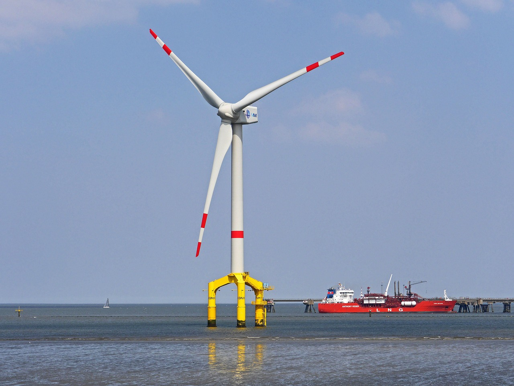
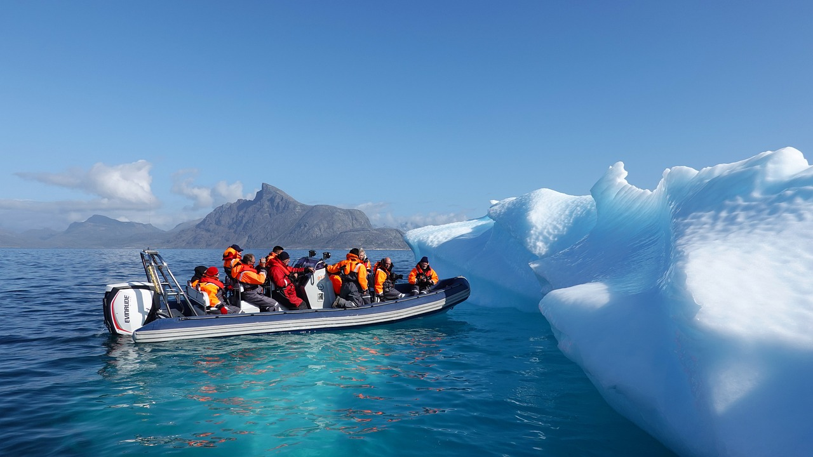
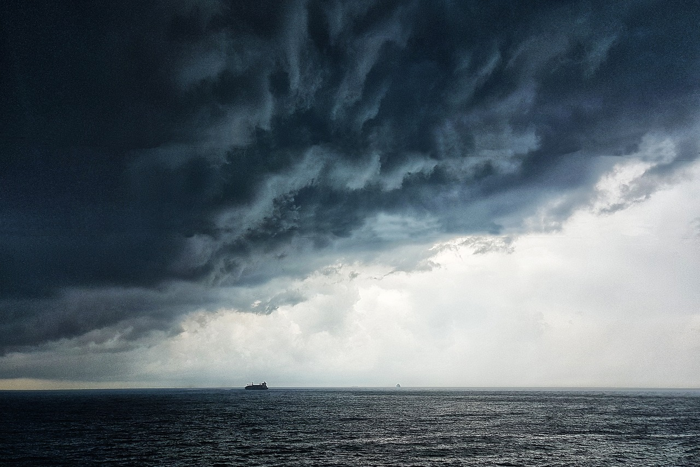
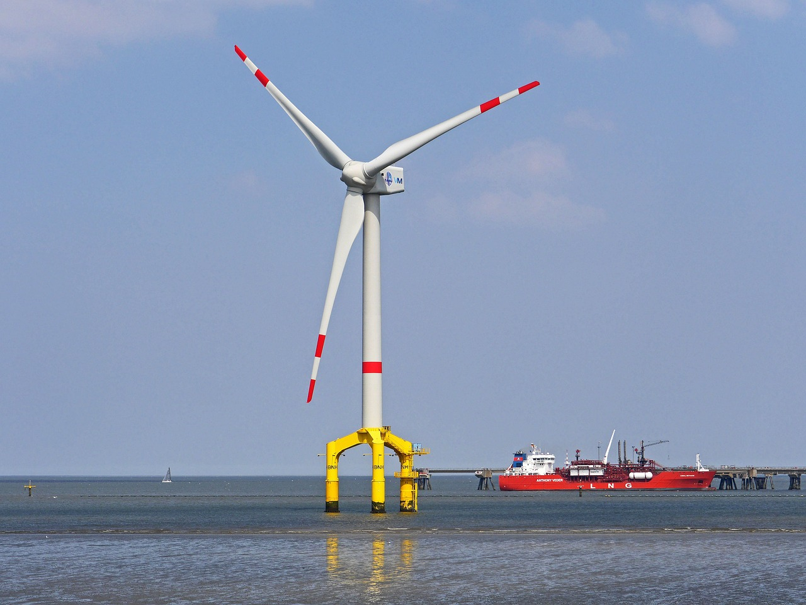

Ocean Gallery
|  |  |
 |
 |
|  |  |

|  |  |
|
|
|  | |
The health and wellbeing of people are greatly enhanced by the oceans. The following are some advantages that a healthy ocean has for people. A large portion of human food comes from the oceans. Medicine: Seas contain a wealth of naturally occurring compounds and substances that have been utilized in the creation of pharmaceuticals and other healthcare products. For instance, substances obtained from marine organisms have been utilized in the treatment of infectious diseases, cancer, and other ailments.
 Ocean Views
Ocean Views
Oceans are essential for controlling the Earth's climate because they absorb greenhouse gases like carbon dioxide.Travel: Oceans are a popular destination for travelers who come to take part in activities like diving, snorkeling, and whale watching as well as to appreciate the beauty and diversity of marine life. Local communities may profit monetarily from this. Recreational activities: Swimming, boating, surfing, and fishing are just a few of the many outdoor pursuits that can improve one's physical and emotional health.
Read More...